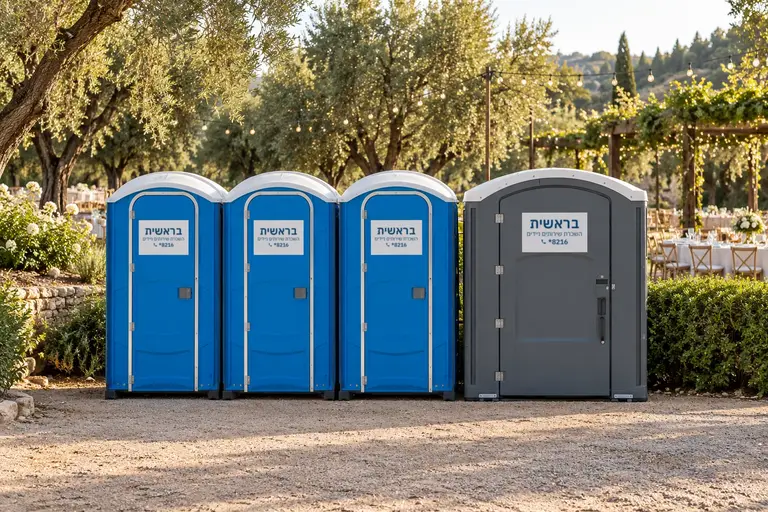

Mobile Toilets for Events in Nature: Field Toilets
When planning an event in nature, there are many things to take care of:

Toilets in Nature – Don't Forget the Toilets
Licences and permits, catering and conversion items, a reception desk, and the guest list. On the face of it, field toilets are not at the top of the list of details and priorities, but in fact they should rank high from the start. An event can indeed be good, pleasant and successful even if the bar does not include all the finest drinks, and even if the seating arrangement around the tables is not the best, but without mobile toilets for events it is simply impossible. After all, you will not send your invited guests to relieve themselves in the nearby field, beyond the hill and so on. So providing proper, spacious and pleasant toilets is the foundation of an event.
For example, our deluxe Tamar model is a mobile toilet for events in nature with water flushing. That is, it has a recycled-water flush that rinses the bowl after use, and a cover in the lower part of the bowl that hides the contents, which makes use much more pleasant, as on aeroplanes. This model also has a service shelf for placing personal items, a fixed mirror on the door, a huge toilet-paper dispenser with room for three rolls, a 250-litre waste collection tank, perimeter shade netting and more.
In addition, mobile toilets vary in their look and design, which, as mentioned, ranges from standard to luxurious.
Mobile Toilet Rental
If you are looking for a service to rent mobile toilets for events in nature, mobile toilet rental for a wedding, or mobile toilets for the field – Bereshit is the address for you. We invite you to contact us; our teams will be glad to give you a comprehensive, professional answer to any question or request that may arise – call: *8216
Frequently Asked Questions
What does "mobile toilets" mean?
When we talk about mobile toilets for events in nature, we mean self-contained units that do not depend on, or need, a connection to a central sewage system. Our company brings the toilet stalls to the event location before it begins, takes care of their ongoing maintenance during the event, and of course collects them when the celebrations are over. These are stalls that can be placed anywhere regardless of ground type and site conditions, and they withstand all weather conditions. At the same time, it is important to know that there are different types of toilet stalls, from standard, good-quality ones to deluxe and luxurious ones, and each stall has its own characteristics.
Related Links
For a quote, call *8216, or leave your details on the Contact page. Consultation and quote with no obligation.